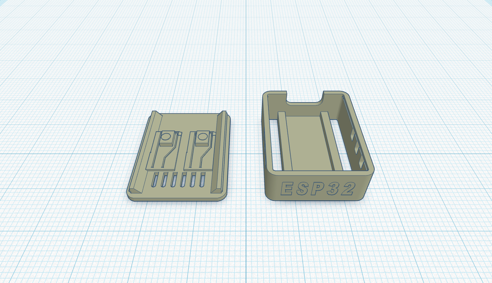

Final Design

Key Features
The final design is a protective 3D printed case for the ESP32-C3 Zero. It protects the board while keeping the important ports, pins and buttons accessible.
- Protective outer case for classroom handling
- Access to USB connection and pin area
- Ventilation for cooling
- Improved strength and cleaner layout
Improvements from Earlier Prototypes
The final design uses the testing results from Prototype 1 and Prototype 2. The pin area has better protection, the openings are clearer and easier to acccess, the case is safer for use and is stronger and more suitable for regular use.
Comparison Table
| Criteria | Prototype 1 | Prototype 2 | Final Design |
|---|---|---|---|
| Fit and size | Basic fit tested with first print | Improved fit and access areas | Final fit checked for classroom use |
| Ventilation/cooling | Limited cooling | Ventilation added | Ventilation included in final layout |
| Ease of printing | Simple and fast to print | Slightly more detailed but still printable | Balanced design that is printable and useful |
| Protection | Basic protection | Better protection around pins and sides | Best protection while keeping access available |
Conclusion
The final design is suitable because it solves the main problem of protecting the ESP32-C3 Zero during classroom use. It is practical, printable, easy to understand, and still allows access to the parts students need to use.